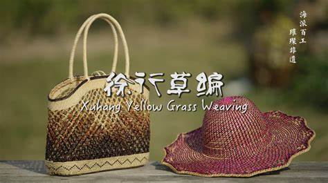

关于我们
大家好，欢迎来到“应艺一畔”。 我们是一群在校大学生， 在这里，我们将带给大家中华优秀传统文化的科普文章。
我们旨在对非遗文化徐行草编的访查、传承与保护，这不仅是对一门传统技艺的珍视，更是对民族文化根脉的坚守。 徐行草编，这一诞生于上海嘉定徐行镇的民间艺术，承载着数百年的历史记忆。它以黄草为原料，经艺人们灵巧双手编织，幻化成形态各异、精美绝伦的生活用品与工艺品。漫步徐行镇，偶尔能遇见头发花白的老人，坐在古朴的庭院中，手指灵动地穿梭于黄草之间，动作娴熟流畅，每一道折痕、每一次穿插，都饱含着岁月沉淀的韵味，他们是徐行草编活态传承的见证者。 然而，在现代化浪潮的冲击下，徐行草编面临严峻挑战。年轻一代多投身于新兴行业，对传统草编兴趣寥寥，传承人群体出现断层；同时，工业化生产的廉价替代品充斥市场，挤压着草编的生存空间。 为了让徐行草编重焕生机，我们深入访查，挖掘那些散落民间的草编故事与技艺精髓，整理成册，让后人能了解其发展脉络。传承方面，走进校园，开展草编兴趣班，让孩子们从小接触这门艺术，在他们心中种下传承的种子；组织社区培训活动，吸引更多居民参与。保护层面，加大宣传推广力度，利用新媒体平台展示草编之美，提升其知名度；推动建立相关保护政策，为草编艺人提供支持与保障。 徐行草编不仅是一件件手工艺品，更是我们民族文化的瑰宝。守护它，就是守护我们的文化家园，让这缕非遗之光，在新时代熠熠生辉，照亮民族文化传承之路 。
对于此调研的科学性和普遍性，我们走访中小学，进行现场发放问卷的形式以及宣讲等宣传介绍活动。选择中小学作为调研阵地，是因为青少年是文化传承的未来主力军，他们的认知和态度在很大程度上影响着非遗文化的传承走向。
在中小学里，我们发放问卷，以严谨的调研方式收集数据。问卷内容涵盖学生对徐行草编的知晓度、兴趣点、获取信息的渠道等多个维度。通过数据分析，我们能清晰洞察青少年对这一非遗文化的认知现状，为后续工作找准方向。同时，开展宣讲活动，在校园中展示精美的草编作品，从实用的草篮、草鞋，到造型别致的动物摆件，让学生们直观感受徐行草编的魅力。
宣讲中，我们讲述徐行草编的历史渊源。它起源于明代，历经数百年岁月洗礼，承载着当地百姓的生活智慧与审美情趣，在农闲时编织，用于日常劳作或生活装饰，逐渐形成独特的艺术风格。随着时代发展，徐行草编不再局限于实用品，更成为具有收藏价值的工艺品，在国内外展览中崭露头角。
然而，调研结果令人忧心。多数学生对徐行草编了解甚少，仅少数人在学校特色课程或社区活动中有所接触。在现代娱乐方式和多元文化冲击下，传统非遗在青少年文化生活中处于边缘地位。即便对草编感兴趣的学生，也因缺乏学习渠道和专业指导，难以深入了解和学习这门技艺。
为改变这一现状，我们建议学校将徐行草编纳入常态化课程体系，定期邀请草编艺人进校授课，让学生在实践中感受草编魅力，掌握基本编织技巧。还可举办草编文化节、创意大赛等活动，激发学生创新思维，鼓励他们将现代设计理念融入传统草编，创作出符合时代审美的作品。
徐行草编作为非遗文化，是民族文化的瑰宝，蕴含着先辈们的创造力和精神内涵。通过对中小学的调研与宣传，我们希望唤起更多人对徐行草编的关注，在青少年心中播撒传承的种子，让这门古老技艺在新时代绽放新的光彩，延续中华民族的文化脉络 。
我们还同时走访从事黄草编织的老一辈的家里，推开那扇质朴的家门，仿佛踏入了徐行草编的历史深处。

交谈中，老艺人们回忆起过去的时光。在物资匮乏的年代，徐行草编是家家户户重要的生计来源。农闲时，男女老少围坐在一起，编织着草篮、草鞋等生活用品，这些物件不仅满足自家需求，还被拿到集市上售卖，补贴家用。随着时代变迁，工业化浪潮袭来，廉价的塑料制品迅速占领市场，徐行草编的生存空间被严重挤压。如今，愿意学习这门手艺的年轻人越来越少，传承出现了危机。
看着老艺人们专注的神情，我们深感责任重大。他们守护着徐行草编的技艺火种，是传承的关键所在。我们要做的，便是接过他们手中的接力棒，加大对徐行草编的宣传推广力度，让更多人了解它的魅力；积极推动草编技艺走进校园、社区，培养新的传承力量，让这门古老的非遗技艺在新时代焕发出新的生机，不被历史的尘埃所掩埋 。